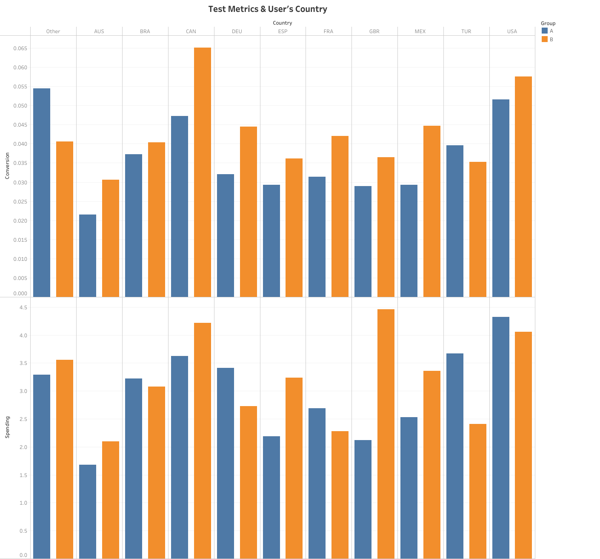

A/B Analysis
Case Study
Overview
GloBox is an online marketplace that specializes in sourcing unique and high-quality products from around the world.
“We believe that shopping should be an adventure, and we want to bring the world to your doorstep. From exotic spices and rare teas to handmade jewelry and textiles, we have a curated selection of products that you won't find anywhere else.”GloBox is primarily known amongst its customer base for boutique fashion items and high-end decor products. However, their food and drink offerings have grown tremendously in the last few months, and the company wants to bring awareness to this product category to increase revenue.
The Problem
While GloBox is renowned for boutique fashion items and high-end decor, the recent expansion in the food and drink category required better visibility and promotion.
Objective: Assess the effectiveness of the banner in driving conversions.
Test Setup
Recommendation and Justification
Fullscale Launch of the Banner
The surge in conversion rates, coupled with the banner's minimal operational overhead, makes a compelling case for its wider deployment. It not only highlights GloBox's evolving product portfolio but is also expected to enrich the user's browsing journey.
Business Factors
Operational Cost: The seamless integration and upkeep of the banner bolster the recommendation.
User Experience: The banner, emphasizing the food and drink category, is projected to enhance the browsing experience, fostering deeper user engagement.
Analytics
Data Analysis performed
- Conduct a hypothesis test to determine whether there's a significant difference in the conversion rate between the two groups. Using the pooled proportion for the standard error and test at a 5% significance level.
- Calculate the 95% confidence interval for the difference in the conversion rate between the treatment and control groups (treatment - control).using the normal distribution and unpooled proportions for the standard error.
- Conduct a hypothesis test to determine if there's a significant difference in the average amount spent per user between the two groups. using the t-distribution and assume unequal variances.
- Calculate the 95% confidence interval for the difference in the average amount spent per user between the treatment and control groups (treatment - control). using the t-distribution and assume unequal variances.
Results:(3.8643, 0.0001)
Given that the p-value is much less than the significance level of 0.05, we reject the null hypothesis. This means there is a statistically significant difference in the conversion rates between the two groups.
Results:(0.0035, 0.0107)
This means that we are 95% confident that the difference in conversion rates between the test group (with the banner) and the control group (without the banner) lies within this interval.
Results: T-statistic: 0.0682, P-value: 0.95
Given that the p-value is much greater than the significance level of 0.05, we fail to reject the null hypothesis. This indicates that there isn't a statistically significant difference in the average amount spent per user between the two groups.
Results: The 95% confidence interval for the difference in the average amount spent per user between the treatment and control groups (treatment - control) is: (-0.439, 0.4708)
This means that we are 95% confident that the difference in average amounts spent by users between the test group (with the banner) and the control group (without the banner) lies within this interval.
Visualizing
- Conversion Rate And Average Amount Spent Between The Test Groups
-
Conversion Rate by Group: Both the control (A) and test (B) groups show similar conversion rates. However, the test group has a slightly higher conversion rate than the control group.
Average Amount Spent by Group: The average amount spent by users in both groups appears to be nearly identical, with no noticeable difference between the control and test groups.
- Distribution of the Amount Spent Per User For Each Group
-
For the majority of users, the amount spent is close to $0, indicating that many users do not make a purchase. Both the control (A) and test (B) groups show a similar distribution for the amount spent by users, with only slight variations. There are a few users who spent higher amounts, but these instances are rare.
- Test Metrics (Conversion Rate, Average Amount Spent) And The User's Device
-
Conversion Rate by Device: Both iOS (I) and Android (A) users in the test group (B) show a slightly higher conversion rate than their counterparts in the control group (A). iOS users have a higher conversion rate than Android users in both the control and test groups.
Average Amount Spent by Device: The average amount spent by users is slightly higher for iOS users in both groups compared to Android users. The difference in average amount spent between the control and test groups is minimal for both device types.
- Test Metrics by Gender
-
Conversion Rate by Gender: Males (M) in both the control and test groups have a slightly higher conversion rate than females (F). The difference in conversion rate between the control (A) and test (B) groups is marginal across genders. Users who identify as "other" (O) have a conversion rate in between that of males and females.
Average Amount Spent by Gender: Males tend to spend a bit more on average than females in both the control and test groups. The difference in average amount spent between the control and test groups is minimal across all gender categories.
- Conversion Rate by Country
-

The conversion rate varies across countries.
For most countries, the test group (B) has a higher conversion rate than the control group (A), with notable differences observed for countries like BEL, BRA, and DEU. However, for some countries like CAN and USA, the control group has a slightly higher conversion rate than the test group.
Average Amount Spent by Country
The average amount spent by users varies significantly across countries. Countries like AUS, BRA, and CAN have users who spend more on average compared to users from other countries. The difference in average amount spent between the control and test groups across countries is minimal, with some exceptions such as Canada.
Complete Python Code
Additional Information
Skills Used:
Helpful Resources
Gupta, Shivam Sen. “A/B Testing in Excel: What Should You Use?” Scaler Topics, 22 May 2023, www.scaler.com/topics/statistical-significance-calculator-excel/. Accessed 16 Aug. 2023.
Training
Data Analytics training and guidance provided by Masterschool along with Udacity